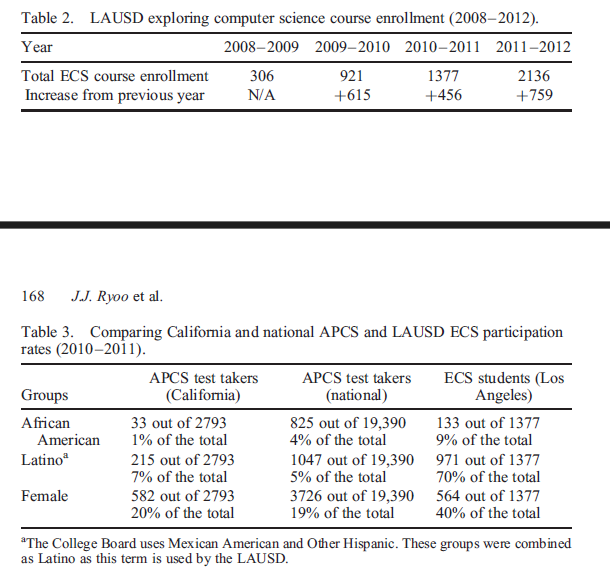
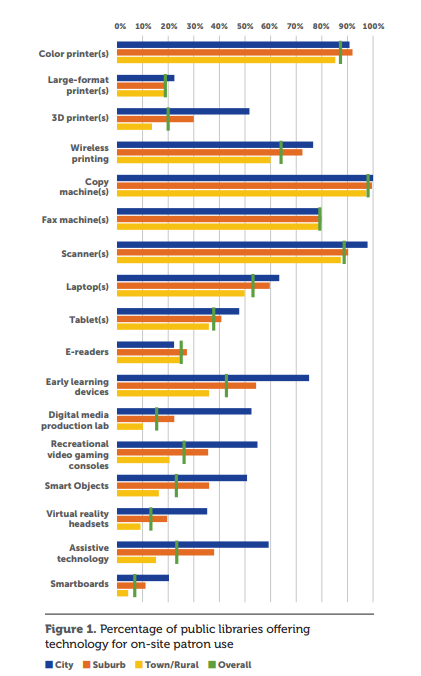

Public schools are often known to struggle with funding and
as such often lack the resources to teach subjects effectively. This problem is worsend for subjects like welding, carpentry, adobe digital design,
and computer science as these subjects require external tools or certified individuals to teach them.
Learn about the lack of computer science learning opportunites in public, predominantly low-income, schools and what has been done, and what can be done to fight this inequity
in education below
The case formally known as Leandro Vs. NC was due to the creation of unequal education opportunities between schools in North Carolina as a result of the funding method for public schools. This method caused schools in low-income areas to receive a reduced amount of funding making them unable to provide an education at an appropriate standard. In 1997, the North Carolina supreme court ruled that the state must constitutionally provide a sound basic education to students: Three decades have passed and this issue is still unsettled as stated by Walker [2]. While this case only concerns North Carolina schools, it illustrates the severity of education inequity problems that could exist throughout the country and the likely state they are in due to inaction.
This problem of educational inequity affects all courses a school would offer, but it affects these courses in different ways and different amounts. One subject that is hit the hardest is Computer Science, as this subject requires adequate computer resources, certified teachers, and a specialized curriculum.
Having a specialized curriculum is important for teaching computer science due to the complexity and importance of the introductory courses and the need for students to practice what they have learned to further their understanding to fully comprehend what they learned. Computer science falls behind when it comes to curriculum adoption in schools since, On average, as of 2010, states had adopted only 55 percent of the 35 recommended learning standards developed by the Computer Science Teachers Association, the premier professional organization for K-12 computing education, and of the standards adopted many of them gear towards low-level skills and not the abstract computational concepts needed to prepare students for college level courses as mentioned by M.deJardins [3]. This slow and timid adoption means that many students in low-income schools are denied an opportunity to learn and explore computer science due to the surface level knowledge the available courses offer. For many of these students, technology is often a fairy dust bringing only sparkle to deadened situations as many schools are flush with technology, but learning is limited to rudimentary user skills with only the most privileged students encountering the critical problem solving essential to computer science as stated by J.J. Ryoo et al.[5].
Qualified teachers are also part of the problem of solving the education inequity problem for computer science in low-income schools as M.deJardins puts it, when Arkansas governor Asa Hutchinson stated at the time a new mandate redefining the certifications needed to be considered qualified to teach computer science courses, only 20 high school teachers across the entire state were prepared to teach computer science [3]. Qualified teachers of computer science often get hired in the industry as stated by M.deJardins. [3], which make finding ones to teach for public low-income schools even more difficult.
This culminates into a decrease in the number of people pursuing computer science and a decrease in the variety of people as well. This decline is showcased by the fact that fewer than 40,000 students took the AP CS A exam in 2014 representing fewer than 1% of AP exams as M.deJardins [3] states; This combined with the fact that in 2009 49% of high school student were female and 23% were Latino with 15% being African American, yet of those taking the 2011 AP CS exam only 18% were female, 8% Latino(a), and 4% African American. When mirroring these numbers with the most recent 2011 employment statistics showing that women – of which only 1% were Latina and 3% were African American – made up just 25% of the Information Technology workforce as stated by J.J. Ryoo et al. [5] illustrates the exact negative impact this education inequity has on the computer science field.
The problem of education inequity concerning computer science courses in low-income schools is a multifaceted problem, however R. M. Martins and C. G. Von Wangenheim have identified lack of infrastructure, lack of preexisting basic computing knowledge or experience in using digital devices, and specific contexts within a low SES background as some key things low-income schools struggle with when teaching computer science courses [1]. Solutions for the lack of a suitable infrastructure include using unplugged activities or activities that don’t require a digital device, or creating a partnerships with universities or other institutions providing devices [1], unplugged activities would include exercise such as writing pseudocode or examining a program to find errors. The lack of preexisting basic computing knowledge and the specific contexts within a low SES background are solved by tailoring the curriculum in a way so that all of the necessary topics are introduced and discussed about while making sure to go at a slower pace to accommodate for the lack of preexisting knowledge about the subject, while making sure to contextualize the class and its activities to the students realities as stated by R. M. Martins and C. G. Von Wangenheim [1].
Another facet of this issue that needs to be solved is creating and adopting a standard curriculum for teaching computer science courses at the middle or high school level. This can be solved by having a country wide standardization for computer science courses in K-12 schools. This standard needs to include classes that teach the type of logical reasoning required to program and include practical lessons to judge student’s abilities to code. An example of one successful curriculum is the Exploring Computer Sciences or ECS curriculum as it covers core topics over six units, being human computer interaction, problem solving, web design, introduction to programming, computing and data analysis, and lastly robotics as explained by J.J. Ryoo et al. [5]. The ESC curriculum’s effectiveness is quite apparent as J.J. Ryoo et al. points out that the number of students enrolled in this course went from 306 in 2008-2009 to 2136 in 2011-2012 [5].
Solving this problem does not stop at the school systems, effort must be made to provide the opportunity to pursue this knowledge outside of school as well. This delves into the digital divide which concerns the not insignificant amount of people who don't have regular access to the internet or a home computing device. Libraries are hard at work in solving the problem of the digital divide as many are taking steps to provide access to technology to as many people as possible. These efforts include allowing patrons to use on-site computers, allowing them to check out laptops or Chromebooks, and allowing them to check out hotspots to have internet access at home as stated by M. Donaldson and W. Martin [4]. Other efforts include providing classes to teach people who may be unfamiliar with computers how to use them, partnering with the local schools to provide outreach opportunities to the youth, and expanding the available technology at the library that is available for patrons to try [4].
nother way to solve this problem is at the city level. Efforts to solve this problem on the city level can be much harder to implement due to the varying levels of infrastructure a city might have, but one example of an effort like this would be leveraging the city’s fiber optic network to create multiple access points that provide free, publicly available, high-speed internet all around the city as stated by M. Donaldson and W. Martin [4].
The problem of education inequity in computer science education, especially in low-income schools, is a complex multilayer issue. This problem is not unsolvable as it has identifiable key issues that give an idea of what needs to be done. Another thing that can be done is the facilitation of more research on the topic, as there is a glaring lack of on this topic. It falls on computer scientist to take charge and contribute to building the necessary curriculums, teach or help certify teachers to teach classes, and ensure that every student no matter what school they attend has the opportunity and resources necessary to peruse a computer science career if they choose to. As the world is rapidly advancing in this technological age it is the duty of those who man the advancement to make sure no one gets left behind as these discoveries are for the good of humanity and as such, need to be made available to all humanity.